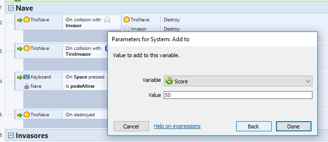

ASSETS
INTRODUÇÃO
1. Comece a aula ensinando a como baixar e instalar a ferramenta;
CONSTRUCT 2
2. Mostre aos alunos o resultado final do projeto a ser estudado nesta aula;
3. Abra um novo projeto em branco e dê uma visão geral para os alunos sobre a interface da ferramenta;
OVERVIEW
4. Dê aos alunos o acesso aos assets que serão usados para este projeto;
CONFIGURANDO A FERRAMENTA
1. Nas propriedades do projeto, mude o Windows Size para 800 x 600 e o nome do projeto para “Space Invaders” e, no Layout Properties (com um clique na tela em branca), mude o Layout Size e o Margins para o mesmo valor, conforme as imagens abaixo:
2. Explique o conceito de Layers para os alunos e os oriente a criar três layers: Background (para o plano de fundo), Gameplay (para configurar todos os elementos do jogo) e UI (para a interface do usuário);
LAYERS BAR
3. Na aba de Projects, importe os sons que serão usados na pasta correspondente;
COMEÇANDO O PROJETO
1. De volta à Layers, selecione a layer do Background e ensine os alunos a como inserir um novo objeto na cena e adicione um Tiled Background e explique o conceito deste objeto;
TILED BACKGROUND
2. Não se esqueça de trancar a layer depois, para que ela não seja alterada;
3. Com a layer Background pronta e trancada, vá na layer de Gameplay pra começar a adicionar os objetos do jogo, começando pela nave do jogador. Coloque na cena um objeto do tipo Sprite e escolha a imagem da nave na pasta dos assets;
4. Explique a importância do Sprite como um dos objetos mais utilizados dentro da ferramenta;
SPRITE
5. Posicione a nave na parte inferior do cenário, troque o nome da Sprite e redimensione-a para os valores indicados;
6. Adicione os Behaviors com os valores indicados abaixo e explique o que é um Behavior e como os que foram usados funcionam;
BEHAVIORS REFERENCES
7. Teste o projeto com os alunos para mostrar as ações dos Behaviors. Se achar necessário, troque os valores para outros testes como exemplos;
8. Para adicionar o tiro da nave, coloque um novo objeto do tipo Sprite, selecionando a imagem correspondente e configure-a como mostrado abaixo;
BULLET
9. Destaque que, para que o jogo não comece já com um tiro disparado, é necessário mover o objeto para fora do cenário. Desta forma, o Behavior Destroy Outside Layout irá destruir o objeto sem perder sua referência;
10. Para que a nave possa disparar o tiro, clique novamente nela para adicionar mais um ponto na imagem. Este ponto será de onde o tiro irá partir;
11. Veja a sequência acima, identificando os passos e onde está localizado o novo ponto criado (índice 3) e como ele é identificado (índice 5);
12. Para que o aluno consiga atirar, insira o objeto Keyboard, que permitirá a identificação dos inputs do teclado;
KEYBOARD
COMEÇANDO A PROGRAMAR
1. A partir deste momento, os alunos começarão a programar dentro do Construct 2. Dê uma breve explicação sobre a event sheet e como funciona a programação dentro da ferramenta.
EVENT SHEET
2. Para manter a event sheet organizada e para facilitar o entendimento dos alunos, comece criando um novo grupo, chamando-o de “Nave”, onde será colocado todos as linhas que dizem respeito à Nave do jogo;
3. Crie um novo evento para quando a tecla ‘espaço’ for apertada e arraste a linha para dentro do grupo da Nave;
4. Explique para os alunos o que é um evento e que deve haver uma ação para acontecer neste evento. Destaque que algum objeto deve realizar tal ação;
HOW EVENTS WORK
5. Neste caso:
-
Evento: [objeto/componente] keyboard [detectar alguma condição] ter a tecla ‘espaço’ apertada;
-
Ação: [objeto] nave [deve realizar uma ação] spawnar (instanciar/criar) um [que pode afetar outro objeto] tiro;
ACTIONS
6. Note que, ao escrever a ação, o tiro deve ser spawnado com as configurações certas: layer 1 (de gameplay) e com a image point que criamos anteriormente, que pode ser identificada pelo nome ou pelo index;
7. Para que o tiro tenha o movimento adequado, adicione uma ação que determinará que o ângulo de movimento do behavior bullet será – 90º;
8. Teste o jogo com os alunos para que eles percebam como este evento funciona na prática;
9. Para que o jogador não consiga atirar o tempo todo, vamos adicionar uma variável booleana que permitirá que um tiro ocorra depois de um determinado tempo. Explique que uma variável do tipo bool só recebe dois valores: verdadeiro ou falso;
INSTANCE VARIABLES
10. Volte no layout e selecione a Nave para abrir a propriedades do objeto, onde as variáveis ficam localizadas e siga os passos descritos na imagem abaixo;
11. Normalmente, uma variável booleana é nomeada para parecer uma pergunta que será respondida com sim ou não (true/verdadeiro ou false/falso). Neste caso, queremos saber se o jogador ‘podeAtirar’;
12. Note que o valor inicial é true/verdadeiro, pois o jogador não começa o jogo já atirando;
13. Agora, temos duas condições para que o jogador possa atirar:
-
Se a tecla ‘espaço’ for apertada E se podeAtirar for verdadeiro → nave pode atirar.
14. Para adicionar uma nova condição, clique com o botão direito no evento (não na linha de ação) e clique em Add another condition;
CONDITIONS
15. Como a booleana está localizada na Nave, é ela quem vamos selecionar para buscar a variável e verificar se ela é verdadeira;
16. Com a nova condição adicionada, o bloco do evento deve conter duas linhas agora;
17. Quando o tiro for instanciado, o jogador já não poderá mais atirar logo em seguida, então ‘podeAtirar’ deve ser definida como falso;
18. Para este projeto, vamos definir que o jogador só poderá atirar novamente quando a bala antiga for destruída. Através desta frase, já podemos identificar o evento e ação que precisaremos adicionar:
-
“o jogador só poderá atirar novamente (ação) quando a bala antiga for destruída (evento)”;
19. Neste caso, confira como o novo evento deve ficar:
20. Caso haja necessário, teste o jogo para que os alunos vejam que só conseguem atirar depois que e o tiro antigo sai da tela (pois ele será destruído pelo behavior de destroy outside layout);
ADICIONANDO INIMIGOS
1. Ao trabalhar com os inimigos, vamos abordar um pouco de animações e frames;
IMAGE EDITOR
2. Adicione um novo sprite mas selecione as imagens através da janela de Animation Frames que aparece em baixo, importando os arquivos; 
3. Para a primeira fileira, selecione apenas o inimigo 1A e 1B;
4. Duplique cada frame para que fique 4 frames;
5. Não se esqueça de deixar na ordem correta!
6. Configure as speed, loop e o nome da animação;
7. Em seguida, duplique a animação duas vezes, renomeando-as para ‘Invaders2’ e ‘Invaders3’. Dentro de cada uma delas, substitua os sprites pelos inimigos 2A/B e 3A/B, mantendo a mesma estrutura de 4 frames alternados;
8. Com tudo pronto, feche esta janela, redimensione o tamanho do inimigo para 50 x 50 e o renomeie para ‘Invasor’;
9. Para os próximos passos, vamos precisar visualizar a grade;
10. Para montar as fileiras de invasores, segure o Ctrl para copiar um objeto e Shift para manter todos os objetos na mesma altura. Faça uma fileira que ocupe todo o cenário, conforme a imagem abaixo:
11. Repita o processo criando mais duas linhas, diminuindo a quantidade de invasores por linha;
12. Para mudar os invasores, nas propriedades do objeto, busque pela área de propriedades de animação e troque o campo ‘Initial animation’ para o nome das animações correspondentes: 1ª linha – Invaders1, 2ª linha – Invaders2, 3ª linha – Invaders3; 
13. Faça os ajustes de posição necessários para que os invasores fiquem parecidos com a imagem e teste o jogo para mostrar as animações aos alunos. Explique que este procedimento foi feito para evitar o uso de mais de um objeto inimigo;
14. Com os invasores devidamente colocados na tela, prossiga para a programação da movimentação deles. Na event sheet, crie um novo grupo chamado ‘Invasores’;
15. Para simular a movimentação clássica de um Space Invaders, comece criando um movimento para a direita que acontecerá a cada 1 segundo. Explique sobre coordenadas (x, y) para maior entendimento;
16. Comece com um evento ‘Every X seconds’ e o configure para 1 segundo. Como ação, selecione ‘Set X’ e adicione 20 pixels à sua posição atual;
17. Confira o resultado final:
18. Porém, ao testar o jogo, os Invasores irão para a direita e sairão da tela por completo;
19. Para evitar isso, crie um sprite de qualquer cor, chame-o de Paredes e coloque-o nas bordas (utilize novamente o Ctrl para copiar o objeto) e, para que elas não apareçam no jogo, mude a ‘Initial visibility’ para ‘invisible’;
20. Crie uma variável booleana no Invasor chamada ‘paraDireita’ com valor inicial false. Ela será responsável por controlar se o Invasor pode ir para a direita ou não (caso esteja encostado nas paredes que foram criadas);
21. Clique com o botão direito no evento do ‘Every 1 seconds’ e crie dois novos sub-eventos;
SUB-EVENTS
22. Os dois sub-eventos vão verificar se ‘paraDireita’ é verdadeiro ou falso, determinando se os Invasores irão para a direita ou para a esquerda;
-
Se paraDireita = true → Invasor.X + 20 (direita);
-
Se paraDireita = false → Invasor.X – 20 (esquerda);
23. Lembre-se que, para comparar se uma booleana é verdadeira, deve ser usado a função ‘Is boolean instance variable set’;
24. Para negar uma booleana, clique em cima do evento com o botão direito e marque a opção ‘Invert’;
25. Coloque as ações de movimentação nos dois eventos correspondentes;
26. A booleana irá ser trocada quando for detectado o encontro entre os invasores e as paredes. Para tal, crie um novo evento para quando o Invasor ‘is overlapping another object’ (neste caso, a parede);
27. Adicione uma nova condição, clicando com o botão direito em cima da primeira e selecionando “Add another condition”. Use o System e procure pela função “Trigger once while is true”, que irá realizar uma ação que deveria ser contínua apenas na primeira vez que é chamada;
28. Por exemplo, caso seja necessário inverter uma booleana toda vez que um objeto colide com o outro, ela seria invertida em todos os frames onde ocorreram essa colisão, o que não seria o efeito desejado. Com trigger once while is true, essa booleana seria invertida apenas no primeiro frame;
29. Crie outra condição em System chamada ‘Pick all’ que selecionará todas as instâncias do Invasor que estiverem na tela;
30. Quando estas três condições acontecerem simultaneamente, as ações devem inverter o valor da ‘paraDireita’ e descer (Set Y) os invasores, para que eles não saiam da tela;
31. Teste o jogo com os alunos e observa com eles quando os eventos são chamados e suas respectivas ações;
32. Agora, para que os Invasores também atire, crie o objeto do tiro, aplicando as mesmas configurações que foram colocadas no tiro da Nave;
33. Na event sheet, vamos instanciar um tiro inimigo a cada 2 segundos em algum Invasor aleatório, observe abaixo como deve ficar este bloco:
34. Note que, como o tiro do inimigo está descendo a tela e não subindo, sua bullet angle of motion deve ser o inverso da do tiro da Nave;
35. Teste o jogo para que os alunos consigam perceber a diferença entre os ângulos;
DETECTANDO COLISÕES
1. Neste ponto, a estrutura básica do jogo está praticamente pronta, mas ainda não foram tratadas as colisões que devem ocorrer para que as coisas de fato aconteçam no jogo;
2. Liste as colisões que devem ocorrer com os alunos:
-
Tiro da Nave x Invasor;
-
Tiro do Invasor x Nave;
-
Tiro da Nave x Tiro do Invasor;
-
Nave x Invasor;
3. Os eventos serão bem parecidos, as colisões serão detectadas com ‘On collision with another object’ e, por enquanto, as ações vão se resumir em ‘Destroy object’. Mais pra frente serão adicionadas scores e vidas que também serão tratadas nestes eventos;
4. Comece com o Tiro da Nave x Invasor e Tiro da Nave x Tiro do Invasor, ambos no grupo da Nave, destruindo os dois objetos envolvidos;
5. No grupo do Invasor, trate a colisão Tiro do Invasor x Nave, destruindo apenas o tiro do invasor, visto que serão adicionadas vidas à nave. Já escreva também o evento da colisão Nave x Invasor, mas não coloque nenhuma ação neste momento;
ADICIONANDO SCORE E VIDAS
1. Na event sheet, clique com o botão direito do mouse e crie duas variáveis globais do tipo número, uma chamada Vidas com valor inicial de 3 e outra chamada Score com valor inicial de 0 (zero);
VARIABLES
2. Raciocine com os alunos:
-
Um valor será adicionado ao Score quando os Invasores forem destruídos;
-
Uma vida será perdida caso a Nave seja atingida por um tiro de Invasor;
-
O jogador deve perder todas as vidas caso um Invasor encoste numa nave;
3. Diante disso, algumas linhas de ações podem ser adicionadas nos eventos de colisões que foram criadas mais cedo. Para adicionar um valor a uma variável global, a ação deve ser feita pelo System, usando a função ‘Add to’;
4. Defina um valor de pontuação por Invasor destruído como, por exemplo, 50 pontos que serão adicionados ao Score; 
6. No evento de colisão Tiro do Invasor x Nave, uma vida será perdida, então deve-se usar a função ‘Subtract from’, onde 1 ponto será descontado de Vidas;
7. Por fim, o jogador deve perder todas as vidas caso um Invasor encoste a Nave. Para isto, deve-se usar a função ‘Set value’;
INTERFACE DO USUÁRIO
1. Teste o jogo com os alunos e cite a eles que, por mais que as variáveis já estejam funcionantes, não muda muita coisa no jogo, já que o jogador não consegue ver quantas vidas tem e sua pontuação de score;
2. Dê uma breve explicação sobre o que é uma Interface do Usuário;
3. Insira um novo objeto do tipo Texto e configure-o conforme a imagem abaixo:
TEXT
4. Atente-se para colocar o objeto na layer UI. A posição do texto também vai se encontrar com a dos invasores, então leve-os um pouco mais abaixo;
5. Repita o processo para o texto de score. Confira abaixo o resultado final;
6. Para que os textos fiquem de acordo com os valores das variáveis, crie um evento que atualiza-os a cada frame;
7. Comece criando um novo grupo chamado System, que irá conter todas os eventos que não são feitos pelos objetos. Crie o evento ‘Every tick’ e adicione duas ações que vão configurar o texto (‘Set text’) com os valores das variáveis;
8. Mesmo contando a vida e o score, ainda falta as condições de derrota e vitória. Raciocine com os alunos:
-
Para ganhar: todos os invasores devem ser derrotados → evento;
-
Para perder: o jogador deve perder todas as vidas → evento;
Ganhar
9. O evento é: todos os invasores devem ser derrotados. Então, o sistema deve contar a quantidade de inimigos da tela e, quando esta quantidade for 0 (zero), as ações devem ser realizadas;
Perder
10. O evento é: o jogador não deve ter mais vidas. O sistema deve contar a quantidade de vidas da variável global e, quando chegar a 0 (zero), algumas ações devem ser tomadas;
11. Para que o jogador saiba que o perdeu o jogo, dois novos sprites serão adicionados na tela, uma imagem de game over e outra com uma mensagem para o jogador apertar alguma tecla para reiniciar a partida. Ao colocar as sprites na tela, configure a visibilidade inicial das duas para invisible;
12. As ações que devem ser realizadas são apenas para alterar a visibilidade das sprites colocadas e, para dar um efeito de morte, destruir o objeto da Nave;
13. O jogador poderá reiniciar a partida ao apertar ‘R’, como é instruído na mensagem da sprite. Mas isto só pode acontecer quando o game over foi de fato consolidado. Logo:
-
Quando GameOver está visível E a tecla ‘R’ for pressionada → o jogo deve ser reiniciado;
ADICIONANDO SONS
1. No começo do projeto, foram importados os sons que serão usados no jogo. Para finalizar o projeto, basta adicionar os efeitos em seus devidos lugares;
2. Insira um novo objeto do tipo Audio na cena;
AUDIO

2. Liste com os alunos os sons que há no projeto e quando eles serão tocados:
-
Soundtrack → durante o jogo todo;
-
Player Laser Shot → quando o jogador atirar;
-
Enemy Laser Shot → quando o Invasor atirar;
-
Explosion → quando um dos dois forem atingidos;
-
Game Over → quando o jogador perde o jogo;
3. Revise os eventos com os alunos e tente encontrar com eles os espaços onde os sons podem ser tocados;
4. Note que, para controlar a trilha sonora do jogo, é necessário criar mais um evento que comece a tocar a música sempre no começo do layout. Porém, só com este bloco, quando o jogo recomeça, outra instância da mesma música é criada e as duas ficam tocando juntas. Isto leva a conclusão que é necessário dar um Pause na antiga trilha sonora antes que a nova comece, veja abaixo;
5. Perceba que foi adicionado uma segunda condição no evento onde é tocado o som do Game Over. O ‘Trigger once while true’ evita que o efeito sonoro seja tocado a cada frame;
6. É necessário alterar algumas configurações ao adicionar a trilha sonora para que ela não fique muito alta e que seja identificada para ser acessada pelas outras funções;
7. Teste o jogo com os alunos e, se não houver nenhum problema, o jogo está pronto!
Instrua os alunos a salvar o projeto e guardar ele para que, no final, ele possa escolher um para publicar e para mostrar para os amigos e para a família.